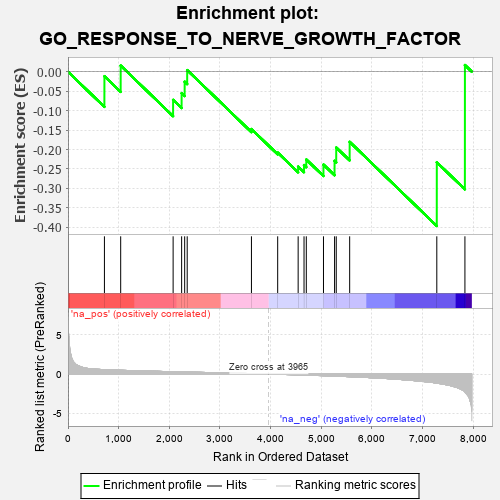
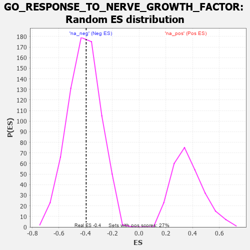

| | | Dataset | 7d |
| Phenotype | NoPhenotypeAvailable |
| Upregulated in class | na_neg |
| GeneSet | GO_RESPONSE_TO_NERVE_GROWTH_FACTOR |
| Enrichment Score (ES) | -0.39634964 |
| Normalized Enrichment Score (NES) | -0.9620223 |
| Nominal p-value | 0.5416098 |
| FDR q-value | 0.9077445 |
| FWER p-Value | 1.0 |
Table: GSEA Results Summary

Fig 1: Enrichment plot: GO_RESPONSE_TO_NERVE_GROWTH_FACTOR
Profile of the Running ES Score & Positions of GeneSet Members on the Rank Ordered List
| PROBE | GENE SYMBOL | GENE_TITLE | RANK IN GENE LIST | RANK METRIC SCORE | RUNNING ES | CORE ENRICHMENT | | 1 | ID1 | | | 719 | 0.555 | -0.0116 | No |
| 2 | AKT1 | | | 1040 | 0.476 | 0.0157 | No |
| 3 | KCNC2 | | | 2075 | 0.295 | -0.0724 | No |
| 4 | CREB1 | | | 2243 | 0.269 | -0.0552 | No |
| 5 | WASF1 | | | 2303 | 0.259 | -0.0257 | No |
| 6 | CDC5L | | | 2353 | 0.253 | 0.0040 | No |
| 7 | CBL | | | 3621 | 0.056 | -0.1473 | No |
| 8 | CRK | | | 4139 | -0.031 | -0.2079 | No |
| 9 | NTRK2 | | | 4543 | -0.104 | -0.2438 | Yes |
| 10 | ARPC3 | | | 4659 | -0.129 | -0.2399 | Yes |
| 11 | ARF6 | | | 4704 | -0.140 | -0.2256 | Yes |
| 12 | PDPK1 | | | 5043 | -0.207 | -0.2387 | Yes |
| 13 | PTEN | | | 5262 | -0.261 | -0.2290 | Yes |
| 14 | MAGI2 | | | 5295 | -0.269 | -0.1948 | Yes |
| 15 | EHD1 | | | 5560 | -0.336 | -0.1803 | Yes |
| 16 | CIB1 | | | 7280 | -1.152 | -0.2327 | Yes |
| 17 | KCNC1 | | | 7835 | -2.249 | 0.0171 | Yes |
Table: GSEA details [plain text format]

Fig 2: GO_RESPONSE_TO_NERVE_GROWTH_FACTOR: Random ES distribution
Gene set null distribution of ES for GO_RESPONSE_TO_NERVE_GROWTH_FACTOR